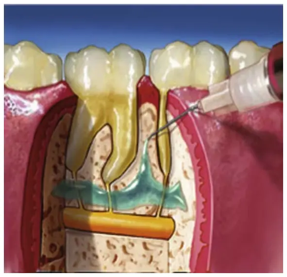
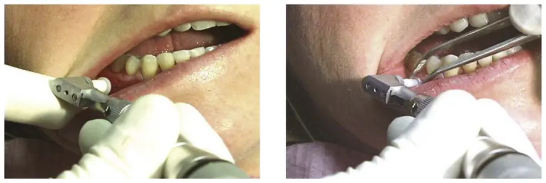

نسخه استخراجشده؛ ترجمه یا تأیید علمی انجام نشده است. وضعیت: captured
مولر اول پایین پالپیت برگشتناپذیر علامتدار دارد. پس از بلاک عصب آلوئولار تحتانی (IANB)، لب بیمار کاملاً بیحس است، ولی با ورود فرز به عاج از درد میپرد. قدم بعدی چیست؟

در تزریق اینترااوسئوس، محلول مستقیم در استخوان اسفنجی کنار دندان گذاشته میشود. PDL و اینتراسپتال شکلهای تغییریافتهی همین روشاند. افزودن اینترااوسئوس پس از IANB، موفقیت بیحسی پالپ مولر پایین را از حدود ۵۵٪ به حدود ۹۰٪ رسانده است.
حجم: برای یک یا دو دندان ۰٫۴۵ تا ۰٫۶ میلیلیتر؛ برای چند دندان یک کوادرانت تا ۱٫۸ میلیلیتر. محل تزریق پرعروق است، پس حجم را در کمترین حد توصیهشده نگه دار تا خطر اوردوز کم شود. آسپیراسیون مثبت حدود ۱ تا ۳٪ است؛ آهسته تزریق کن.
مدت بیحسی پالپ ۱۵ تا ۳۰ دقیقه است: با محلول ساده حدود ۱۵ دقیقه، با تنگکننده نزدیک ۳۰ دقیقه و عمیقتر.
فشار ثابت بهجای نوکزدن، استخوان را داغ میکند و به درد، تورم یا ترشح پس از تزریق (حدود ۵٪) و گاهی فیستول میانجامد.

تپش قلب: با محلول دارای اپینفرین یا لوونوردفرین، تاکیکاردی گذرا در ۴۶ تا ۹۳٪ موارد گزارش شده است. محلول ساده (مپیواکائین ۳٪) ضربان را چندان بالا نمیبرد، ولی عمق بیحسی کمتری دارد. اگر تنگکننده لازم است، کمترین حجم با اپینفرین ۱:۲۰۰٬۰۰۰ یا ۱:۱۰۰٬۰۰۰؛ از ۱:۵۰٬۰۰۰ پرهیز کن. پیش از تزریق به بیمار بگو ممکن است ضربانش چند لحظه تند شود.